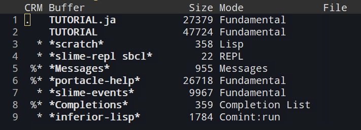

本稿の目的
自分は普段Vimを使っており、Lispを書くにあたってはSwankとSlimvを利用している。
これでもある程度は書けるが、Slimvは少々buggyだし、設定もかなり面倒だった。
Emacsを常用する気は無いが、Lispを書く時の選択肢を確保しておくことは重要だと考えている。
Emacsとslimeでできることを知っておけば他のエディタのlisp支援プラグインを作りたいときに役に立つだろうし。
参考文献
使用する環境(portacle)
portacleを使用する。
portacleは、マルチプラットフォーム対応しているCommon Lisp開発環境。
portacleのCommon Lispは普段使っているSBCLではなくCLISPだが、差し当たって不都合はないはずなので、今は許容する。
windowsにおいては、公式サイトからバイナリをダウンロードして実行ファイルを起動すればすぐにportacleを使用可能。
Emacsの操作方法
コマンドの表記は下記ルールに従う。
C-x: Ctrlキーを押しながらxを押すC-x C-s: Ctrlキーを押しながらxを押して離し、sを押すC-x i: Ctrlキーを押しながらxを押して、Ctrlとxを離し、iを単体で押す> Help > Emacs Tutorial: ウィンドウのHelp > Emacs Tutorialメニューを選択する
コマンドキャンセル
C-g: コマンドをキャンセルする
終了
C-x C-c: Emacsを閉じる
ファイル操作
C-x C-f: ファイル名を指定して開くC-x C-r: ファイルを読み取り専用として開くC-x C-s: 上書き保存C-x C-w: 新規ファイルで保存C-x C-i: ファイルを挿入
バッファ操作
C-x k: バッファを閉じるC-x C-b: バッファリスト表示C-x b: バッファ切り替えd: 削除フラグをつけるs: 保存フラグを付けるx: 保存/削除を実行するu: フラグを解除するq: バッファメニュー終了
バッファリストの見方

| 項目 | 意味 |
|---|---|
C |
現在見ているバッファ. |
R |
読み込み専用バッファ% |
M |
変更があったバッファ* |
Buffer |
バッファの名前。ファイルに紐付いていないものは*バッファ名*で表記される |
Mode |
バッファのモード |
File |
バッファに紐付くファイル |
ウィンドウ操作
C-x 2: ウィンドウを水平分割するC-x 1: ウィンドウを垂直分割するC-x 0: ウィンドウを閉じるC-x o: ウィンドウを分割表示中に別ウィンドウに移動
カーソル移動
Linux系の端末では、Emacsと似たようなキーバインドが利用できる。
- 文字単位で移動
C-f: 右に1文字移動(forward)C-b: 左に1文字移動(backword)C-p: 上に1文字移動(previous)C-n: 下に1文字移動(next)
- 単語単位で移動
M-f: 右に1単語移動M-b: 左に1単語移動
- 行単位で移動
C-a: 行頭に移動C-e: 行末に移動
- 文単位で移動
M-a: 左に1単語移動M-e: 右に1単語移動
- ファイル先頭・末尾
M-<: ファイル先頭に移動M->: ファイル末尾に移動
- カーソル行を画面のどこに表示するか
C-l: カーソル行を画面の中央に表示C-l C-l: カーソル行を画面の上部に表示C-l C-l C-l: カーソル行を画面の下部に表示

編集
- 削除
C-d: 文字削除M-d: 文節を削除
- アンドゥ/リドゥ
C-x u: アンドゥC-g C-/: リドゥ
- カット/コピー/ペースト
C-h: バッファ全体を選択C-SpaceorC-@: カーソル位置にマークを設定するC-w: 選択領域(=マーク位置からカーソル位置まで)をカットM-w: 選択領域(=マーク位置からカーソル位置まで)をコピーC-y: ペーストC-x r k: 矩形選択領域(=マーク位置からカーソル位置までの矩形)をカットC-x r y: 選択領域(=マーク位置からカーソル位置までの矩形)をペーストC-x r t: 矩形選択領域の各行に文字列を挿入C-k: カーソル位置から行末までをカット
C-j: 改行C-M-\orM-x indent-region: 一括インデント
検索・置換
NOTE : Emacsでは、デフォルトでは大文字と小文字を区別しない。
C-s: インクリメンタル検索(順方向)C-r: インクリメンタル検索(逆方向)M-%: 置換(y:yes,n:no,!:all,q:quit)
マクロ
C-x (: マクロを記録開始(lispの開き括弧)C-x ): マクロを記録終了(lispの閉じ括弧)C-x e: マクロを実行(eval)
文字コード
C-x enter f (文字コード指定): 保存する文字コードを指定する(通常はutf-8)C-x enter c (文字コード指定) C-x C-f: 文字コードを指定してファイルを開く(通常はutf-8)
EmacsLisp
式の最後にカーソルを移動して Ctrl+j: 式を評価する
フォント
文字の上にカーソルを移動して Ctrl+u Ctrl+x =: 文字情報を表示するM-x describe-fontset: フォントセットを表示する
繰り返し
C-u 数字 コマンド: コマンドを「数字」回繰り返す
パッケージ管理
M-x list packagesパッケージリストを開くp: 上に移動n: 下に移動q: 終了
M-x package-refresh-contents: パッケージリストを更新する
Lisp
C-c C-z: Lispとの対話用バッファにスイッチする。C-c C-q: その場で必要な閉じ括弧を全て閉じる。C-c C-c: カーソル位置の定義をコンパイルする。C-c C-z: プログラム側からREPLに戻る。C-c C-l: ファイルをロードする。M-x slime: Slimeを再起動する。
チュートリアル/マニュアル
C-h t:> Help > Emacs Tutorial: チュートリアルを開始する。> Help > Emacs Tutorial(choose language)...: 言語を選択してチュートリアルを開始する。C-h i: マニュアルを表示する。C-h ?: ヘルプのリストを表示する。C-h k: キーの組み合わせと、それによって呼び出されるコマンドを表示する。C-h w: コマンド名を指定して、それを呼び出すキーの組わせを表示する。